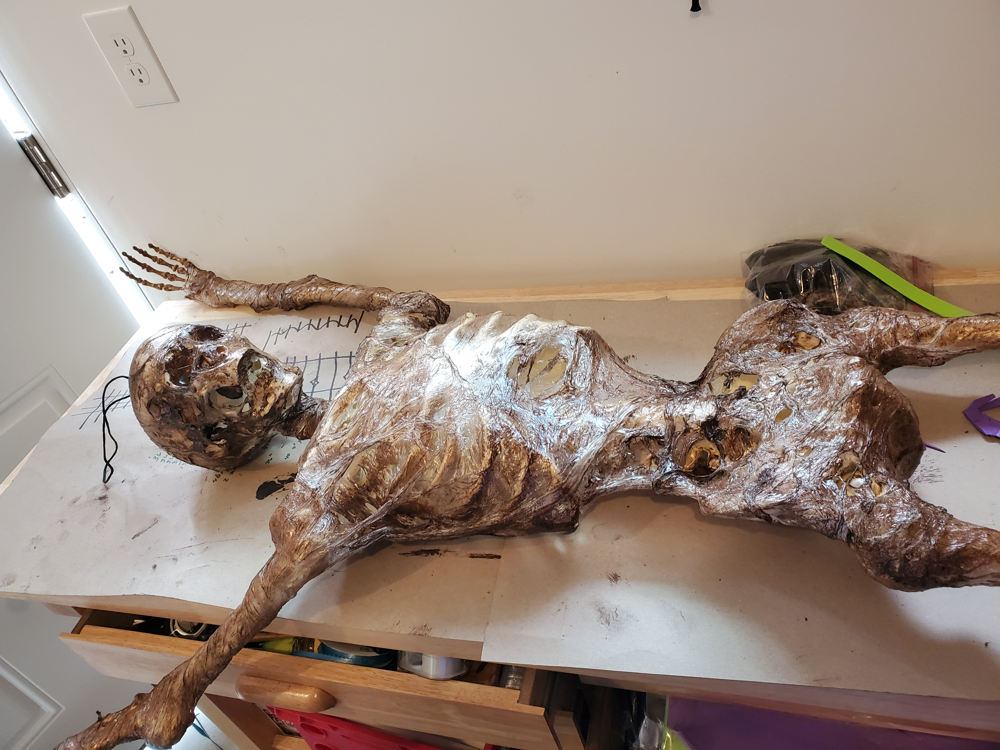
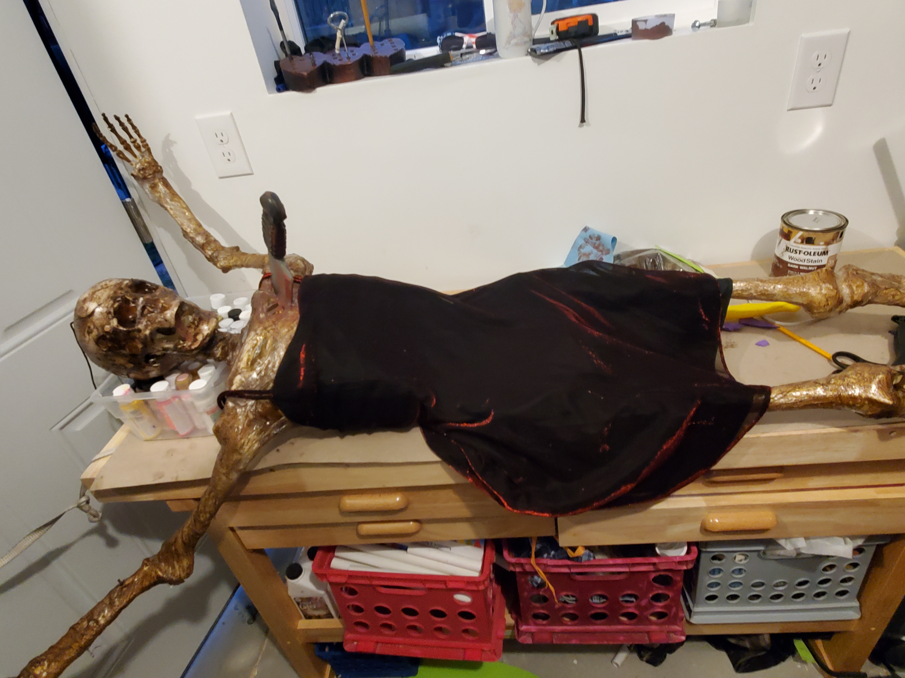
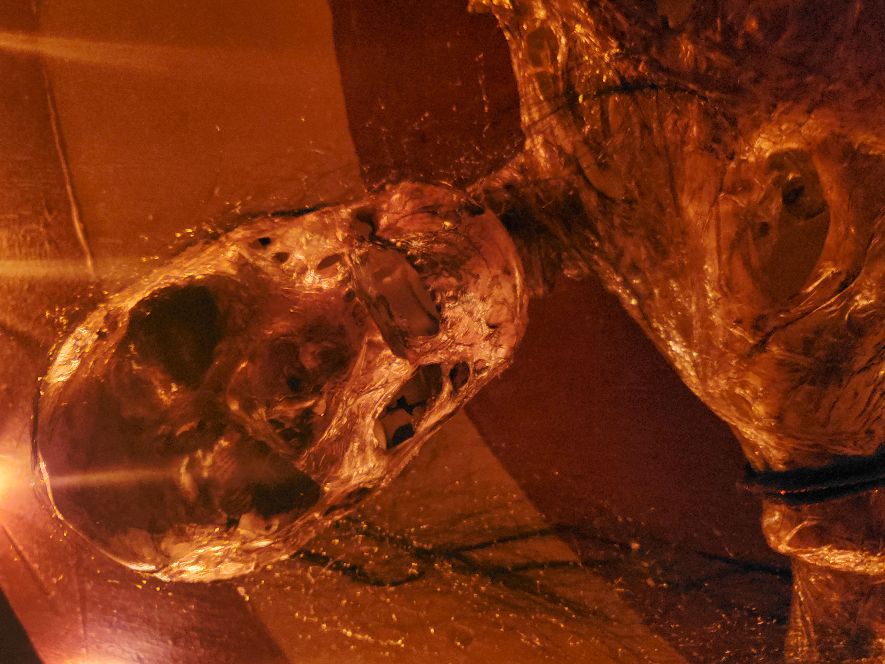

Safety Notice:
Wear your PPE, and work in a ventilated area. Melting plastic releases some nasty fumes, and melted plastic stuck to your skin really hurts.
Halloween has always been my favorite holiday. Over the years, I began to wish that my decorations were scarier and more realistic. One method of achieving this is called corpsing, and I will attempt to show how that is done.
The best part of corpsing is that it is easy and inexpensive. There are several methods available which will lead to a variety of textures, so if this doesn't fit your image of what you want your creation to look like, try something different. For example, paper towels soaked in wood glue will yeild leathery skin, and cotton balls stretched and covered with liquid latex will look more rotten.
Wear your PPE, and work in a ventilated area. Melting plastic releases some nasty fumes, and melted plastic stuck to your skin really hurts.
Start with a cheap skelly of your choice. Pose your creation in the final pose that you want them to be in. If needed, use wire to support the joints and hold the pose. If your base skelly could use any addional tweaking, do that now. A quick blast with a heat gun will allow you to move body parts to look the way you want. Don't feel limited by the shape the skelly.
Begin to wrap the skelly in several layers of plastic wrap. Add extra layers aroud the joints for support and to hide any wires you may have used. Depending on how decomposed you want this to look, you can also add layers to simulate muscels. You can add wadded up balls of plastic wrap, paper towels, or other fillers to beef it up, as well as rolled up plastic to look like veins and tendons.

In a well ventilated area, begin to apply heat to the plastic from a distance. The closer you get, the faster the melt. If you get too close, you will melt a hole straight through the layers of plastic. Holes can look good, allowing the bones to show through, but if it doesn't look the way you would like, just add more plastic. I would advise you to wear leather gloves while handling the skelly, because the last thing you want to do is touch freshly melted plastic and get it stuck to your skin.
Once you have acheived the desired look of the skin, it is time to add some color. I like Rustoleum in Dark Walnut, but you can really use whatever you have laying around. This is when you need to get your disposable gloves on, because it does get a bit messy. Use a rag to wipe on the wood stain. Add extra to places like the eye sockets that you want really dark. Allow it to sit for about 15 minutes and then wipe off the excess. Allow to dry until it is no longer tacky. Depending on the weather and humidity, this could take a few days.
Time to dress your corpse! I am a big fan of finding just hte right outfit at your local thrift store. For this project, I wanted something a little showy, something that will catch the light. The dress was only $3 at my local ARC. It had to look a bit rough, so in the end, I ran a wire brush over it to tear the fabric.
The last thing I added to my skelly, who I had named Dolores at this point, was some hair. I wanted it to look like most of her hair had fallen off or had been picked at by scavengers, so I only needed a little. I cut a few clumps from an old wig and just hot glued them to her head.
You are pretty much done at this point, except for the fact that you will never feel like you are done. I mounted Dolores on her "Wheel of Death", bound her hands and feet with frayed rope, added knives and blood stains. She came out looking spectacular, and caused more than a couple neighbors to avoid walking past my house.